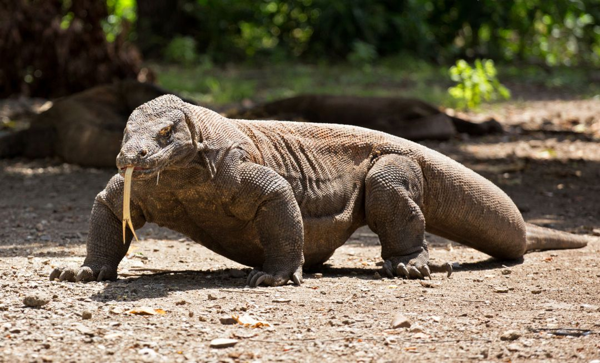

Dragon de komodo

Este reptil se encuentra en pastizales abiertos secos, sabanas y bosques tropicales en elevaciones bajas. Los dragones de Komodo se encuentran en algunas islas pequeñas al este de Bali y al sur de Borneo, incluidas la isla de Komodo, la isla de Flores, la isla de Rinca y la isla de Padar, se mueve con agilidad por el suelo, a pesar de tener un peso considerable (puede correr a 20 km/h en distancias cortas), nada muy bien y es capaz incluso de desplazarse entre islas cercanas cuando las corrientes marinas son favorables, de alimentación carnívora y carroñera, tiene una saliva bastante tóxica.
- Los dragones machos de Komodo miden hasta 10 pies (3 m) de largo; las hembras miden hasta ocho pies (2,4 m) de largo.
- Pesan hasta 176 libras (80 kg).
- Los adultos están cubiertos de piel escamosa marrón o gris; los juveniles son de color verde oscuro con bandas amarillas y negras.
- Caza al acecho, mordiendo a las presas con su poderosa mandíbula y, si la víctima escapa después del ataque, muere a las pocas horas a causa de la infección por las más de 50 bacterias que contiene su saliva.
- Se mueve con mucha agilidad por el suelo, a pesar de su peso considerable (se ha llegado a registrar una velocidad de 20 km/h en distancias cortas), nada muy bien y es capaz incluso de desplazarse entre islas cercanas cuando las corrientes marinas son favorables, e incluso sube a los árboles con facilidad, sobre todo los ejemplares jóvenes.
Pagina Principal